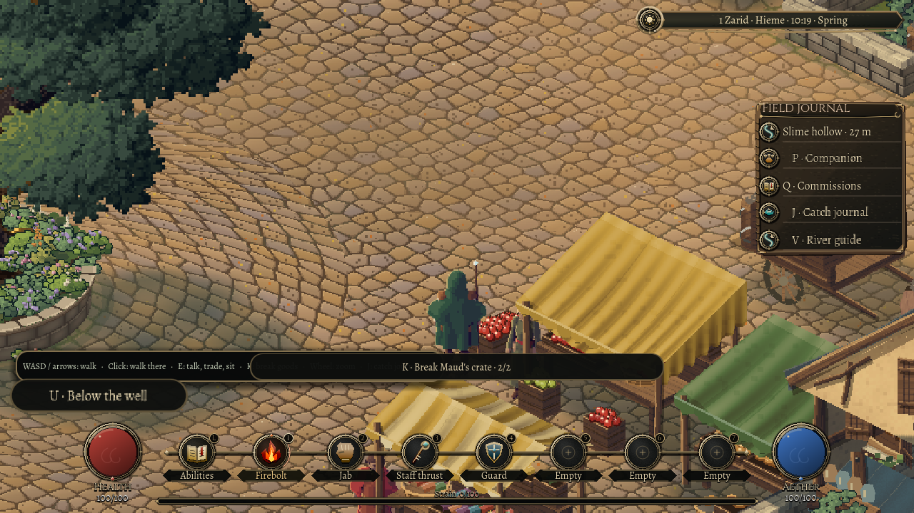
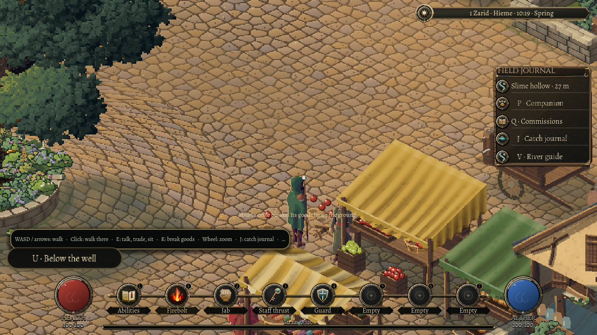
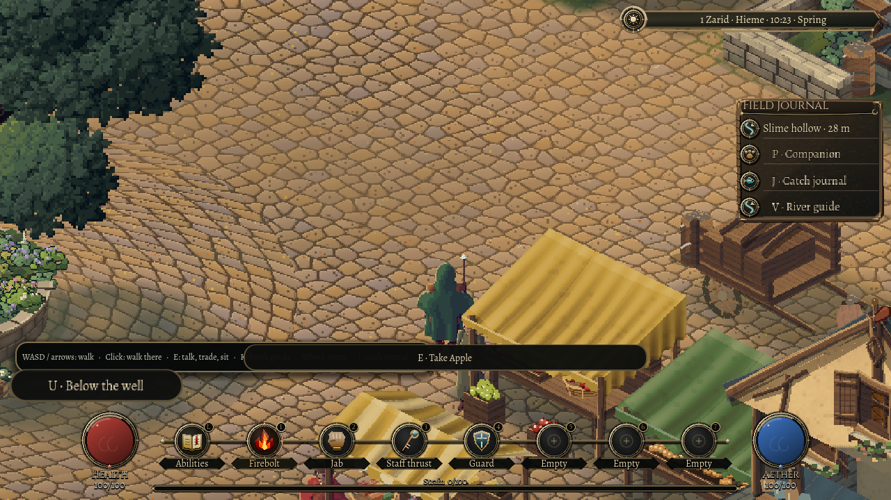

31 October 2026
When the crate breaks
31 October 2026
A crate of apples makes a small promise. Its slats hold something. That red heap belongs to someone, and a hard enough blow ought to leave apples on the cobbles.
Oakwell's market has been full of those promises. Crates, barrels and sacks helped make the square look busy, but they were scenery. This pass gives its reserve goods a physical life: a container can take damage, break apart and leave its actual contents behind.
This first pass covers twelve street reserves in Oakwell. Bringing the same rules to counter displays and other towns is still ahead.

A deliberate mess
Stand close to a container and its prompt names the owner, the container and its remaining integrity. Press K to strike it. An ordinary crate takes two accepted blows; a barrel holds together a little longer. The first blow leaves a visible crack. The breaking blow replaces the container with its wreckage and spills its finite stock.
This is a deliberate action, with a swing and a contact point. You have to reach the goods from the same ground. Standing upstairs, behind a wall or on the far side of another solid counter is not enough.
The broken material remains readable. Wooden containers leave lengths of timber, wicker breaks into lighter pieces, and a sack becomes a slack patch of cloth. Their old obstruction goes too. The place where the crate stood becomes ground you can walk across.
What falls out
The reserve stock follows the trade around it. Fruit, bread and folded cloth remain different things when they leave their containers. The spill has a repeatable pattern for that particular container, and round produce spreads farther than a loaf.

There is a practical limit to the mess. Goods need dry, supported ground. A proposed landing beneath a wall, in water or beyond a counter is replaced with a nearby clear place. If there is no safe room for the complete spill, the breaking blow cannot quietly destroy part of its contents.
Press E beside a fallen item to take it into the satchel, one item at a time. A full bag leaves it where it is. Apples on the ground do not become decoration again because there is nowhere to carry them.
These are the market's reserve and display goods. The merchant's trading menu still owns its separate counter stock; this pass does not pretend that smashing a reserve changes what the merchant is offering for sale.
The next visit remembers
The important part happens after the last apple lands. Break a crate, collect an apple, save and Continue: the crate must remain broken, the carried apple must remain in the bag, and the apples left outside must still be outside.
That whole state travels together. Returning to town cannot refill the same crate, and taking an item cannot save only half of its journey between ground and bag. An older visit gains the new intact reserves once, then carries their history forward.

The goods also keep their owner. Breaking them records whose container was damaged and what it held. Guard reactions, witnesses and restitution still need their own work; this square does not yet punish the player for vandalism.
For now, the change is small enough to understand with one broken crate. The market can lose something real. The player can leave a mess, walk through it, carry part of it away, and return to find the rest.